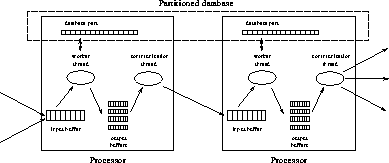

Each processor in our algorithm executes the same code on different parts of the database. The data structure used for the database is the same as for the sequential algorithm, except that each processor contains only a part of the entire array. The processors also contain buffers for sending and receiving update messages, shown in Figure 5 (in the Appendix).
An element of a buffer represents one update message and specifies the address of a parent entry and the final value of the child that is sending the message. Each processor contains one input buffer containing messages sent to it and one output buffer for every other processor.
Every processor uses two threads. A worker thread performs the actual computations. Whenever this thread has determined the final value for an entry, it generates messages for the parents of this entry and stores them in the appropriate output buffers. A second thread, the communication thread repeatedly copies messages from these buffers over the network to the input buffers of other processors, where they will be picked up by the worker threads. The overall structure of the parallel algorithm is illustrated in Figure 1. Below, we explain the algorithms for the worker and communication threads in more detail.

Figure 1: Overall structure of the parallel algorithm.
A worker thread (see Figure 7) first initializes all entries in its part of the database, as discussed in Section 2.2. Next, it performs two tasks:
Each message in the input buffer contains the final value of a child of an entry stored on the current processor (see Figure 8). To process such a message, the worker thread checks if the new value is better than the entry's current value, and if so, updates the field BestValue (see Figure 9). Furthermore, the worker thread subtracts one from UnknownChildren. If all children of an entry have now reported their final value or if no higher score can be attained the final value for the entry has been determined.
Whenever the worker thread has determined the final value of an entry (either while processing the local part of the database or while processing incoming messages), it needs to generate outgoing messages. The worker thread determines the parents of the entry by calling the game's unmove function (see Figure 10). For each parent, the worker adds one message to the appropriate output buffer. The value field in the message is determined by the value of the entry and the points scored by the move from the parent to the entry (as explained in Section 2.1). If the parent entry is stored on the same processor, the buffering mechanism is avoided and the worker thread immediately updates the parent entry itself.
The final step of the worker thread is to make one more pass through the local partition of the database and set all entries whose values have not been determined yet to zero. This final pass was explained in Section 2.2.
The algorithm for the communication thread (Figure 11) is simple. The thread repeatedly selects a non-empty output buffer and then sends all data in the buffer to the input buffer on the destination processor, using a single message.